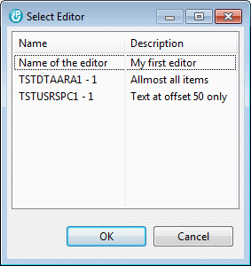
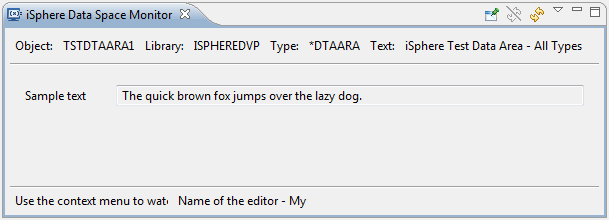
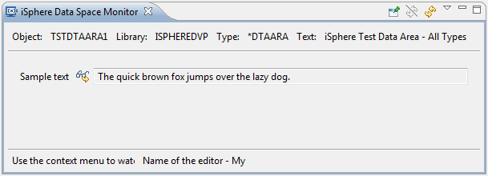
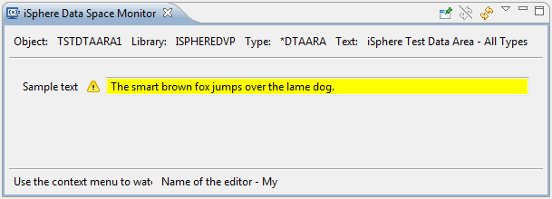
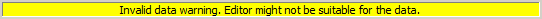
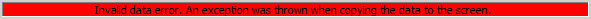

The
Data Space Monitor is used for monitoring changes to your data
space objects.
The
Data Space Monitor is used for monitoring changes to your data
space objects.
Before you can use the monitor for character data areas with mixed data, or for user spaces, you need to go to the Data Space Editor Designer and create an editor for it. For simple character data areas, or for decimal or logical data areas, an editor is not required, because the monitor can generate one for you. But it cannot know anything about layout of a user space, or a data area with mixed data, so you need to create an editor.
Once you have one or more editors for your data space object, you can start the monitor from the context menu (right click) in the RSE tree. If you have more than one editor for the selected object, choose the appropriate one in the popup dialog for the data you wish to monitor:

This opens the monitor and the content of your data space is displayed, as defined by the editor.

You can add a watch marker to every field of the dialog from the context menu of the item. A watched icon is decorated like this:

When the view is refreshed and the value of the data has changed, the field is highlighted with a yellow background:

Cool, isn't it?
| Hint: You can change the background color from the Colors and Fonts page of the Eclipse preferences. |
If the monitor encounters a problem when copying the data to the screen, it displays the following message at the bottom, right corner of the view:

If get this message, make sure that the fields of your editor are properly defined, with the correct offset, type and length.
If the monitor encounters a serious problem when copying the data to the screen, it displays the following message at the bottom, right corner of the view:

If get this message, make sure that the fields of your editor are properly defined, with the correct offset, type and length.